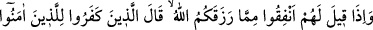
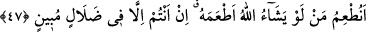

Sonra âyet ve alâmetlerin en büyüğü hakîkat erbabından ve yakîn ehlinden dinde
kâmil ve bâliğ (ergen/ermiş) olan erlerdir. Kim onları kabule ve onlara teslîm olmaya
muvaffak kılınır, kalb-i selîmi elde edinceye kadar onların güzel terbiyelerinde yetişirse
kurtulur. Mukbil/Hakk’a yönelmiş ve makbul olur. Kim de onlardan yüz çevirir ve îtiraz
ederse, helâk olur. Müdbir/Hakk’a sırtını dönmüş ve merdûd/reddollunmuş olur.
Büyüklerden birisi der ki: Peygamberlerin dilinden gelen haberlere inanıp aynı
haberler peygamberlerin vârislerinden birinden gelince bunlara inanmamak
insafsızlıktır. Çünkü deniz birdir. Evliyâullahın getirdiği haberlere inanmıyorlarsa hiç
olmazsa bu haberleri hikâye yoluyla da alabilirler. Peygamberlerin getirdiği akıllara
şaşkınlık verecek olan haberlere inanıldığı gibi Allah tarafından muhâfaza edilen
(mahfûz) evliyânın getirdiği haberlere de inanmak gerekir. Aslın (peygamberlerin)
getirdiklerini kabul ettiğimiz gibi fer’in (evliyânın) getirdiklerini de muvâfakat ile
birlikte kabul ederiz.
Ebû Hanîfe (r.h.)’ın: “Rasûlullah (s.a.)’den bize ne geldiyse başımız ve gözümüz
üstünedir. Sahâbeden bize ne gelirse bazen alıp kabul eder bazen terk ederiz. Tâbiînden
bize gelenlerde ise onlar da adam biz de adamız.” şeklindeki sözüne gelince, ulemânın
hakkında ihtilaf ettiği zâhir içtihâda göredir. Bu hususta yüz çevirmek, daha kuvvetli
delile göre aşağıda olandan yukarıda olana geçiştir.
Bazen müridin Allah ile ve şeyhiyle olan edebinin güzelliği sebebiyle Allah, şeyhde
bulunmayan nice ilimleri yine şeyhinin lisânından tâlibe açar. Meselâ A’meş, Ebû
Hanife’ye bazı meseleleri sordu. Ebû Hanîfe bu soruların hepsini cevaplandırdı. Bunun
üzerine A’meş Ebû Hanîfe’ye “Sen bunları nereden biliyorsun?” dedi. Ebû Hanîfe:
“Senin bize anlattıklarından” dedi. Bunun üzerine A’meş: “Ey fakihler topluluğu sizler
doktorsunuz, biz ise eczâcıyız.” dedi.
Çalışarak elde edilen ilmin alâmeti, akıl terâzisine girmesidir. Vehbî ilmin alâmeti ise
akıl terâzisinin nâdiren kabul etmesi ve düşünceleri bakımından akılların reddetmesidir.
Mekrin (hile ve tuzağın) en büyüklerinden birisi kula ilim nasip edilmesi ve onunla
amelden mahrum kalması ya da amel nasip edilip amelinde ihlâstan mahrum kalmasıdır.
Ey kardeşim, bu durumu kendinde ya da başkasında görürsen bil ki bu durumu
sürdüren onunla aldanmıştır. Öyleyse Allah’a yönelmek ancak ihlâs ile olur. Çünkü
riyânın yüzü başkasına dönüktür. Allah Teâlâ bizi de sizi de muhâfaza buyursun.
47. Allah’ın size rızık olarak verdiklerinden hayra sarfediniz, denildiğinde,
kâfirler müminlere dediler ki: Allah’ın dilediği takdirde doyuracağı kimseleri biz mi
doyuracağız? Siz gerçekten apaçık bir sapıklık içindesiniz.